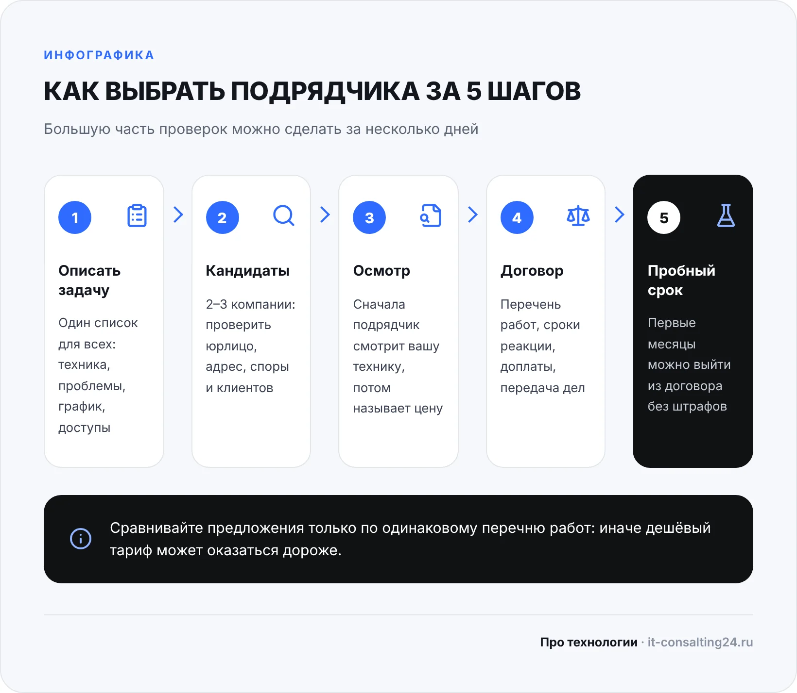
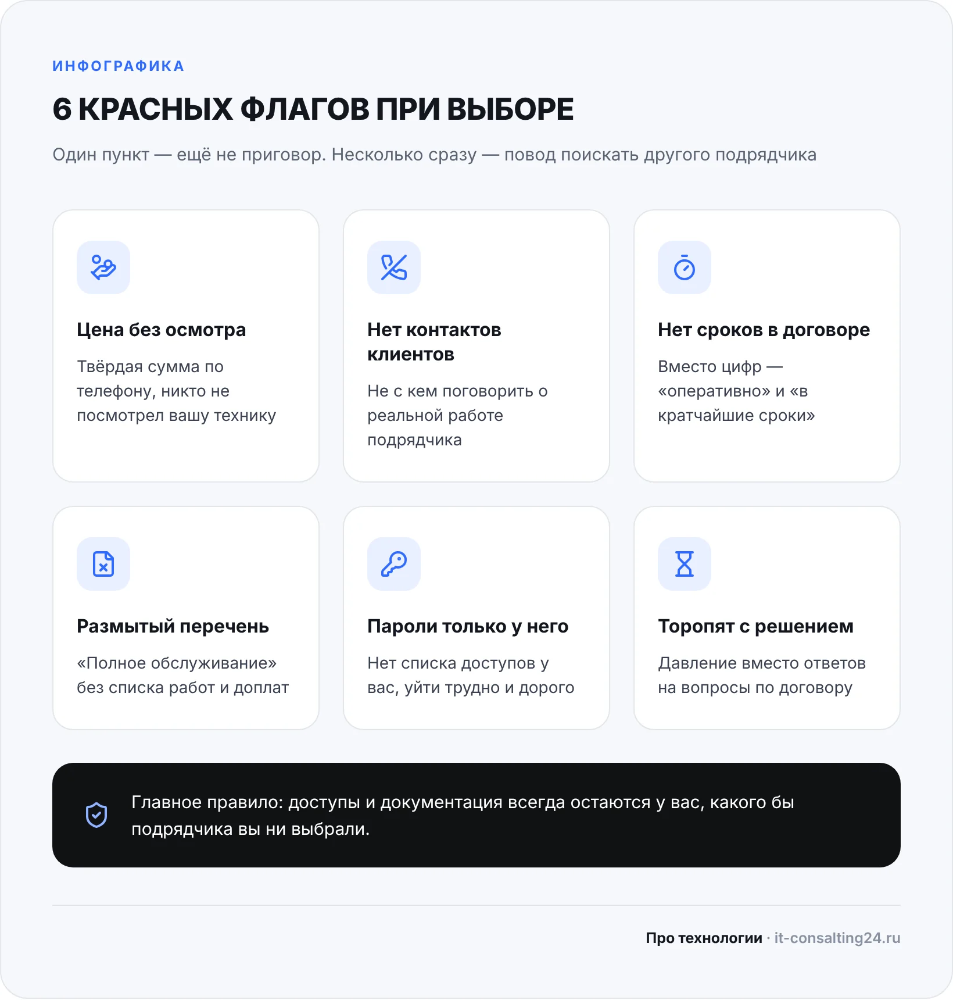

Как выбрать ИТ-аутсорсинг, если сами вы не айтишник и оценить инженера по разговору не можете? Смотреть не на презентацию, а на то, что можно проверить: что записано в договоре, как подрядчик изучает офис перед тем, как назвать цену, кто конкретно будет приезжать и что случится с паролями, если вы расстанетесь.
Статья для владельцев и руководителей небольших компаний. Ниже — порядок выбора, семь критериев, вопросы для разговора с подрядчиком, красные флаги и чек-лист перед подписанием. Оговоримся сразу: мы сами продаём ИТ-аутсорсинг в Оренбурге, поэтому даём такие критерии, по которым можно проверить и нас.
Что подготовить до первого звонка
Об аутсорсинге обычно задумываются, когда своего айтишника нет, он уволился и никто не знает паролей либо разовые вызовы стали регулярными. Выгода в том, что расходы на ИТ становятся предсказуемыми, а проблемы ловят плановым обслуживанием, а не после поломки. Но появляется она только при нормальном подрядчике, поэтому выбор важнее тарифа.
Подрядчик отвечает на то, что у него спросили. Если сказать «нужен айтишник», вы получите типовое предложение, и сравнивать будет нечего. Пятнадцать минут подготовки это исправят. Запишите:
- Что есть: сколько рабочих мест, есть ли сервер, 1С, кассы, удалённые сотрудники, филиалы.
- Что мешает сейчас: зависает 1С, пропадает Wi-Fi, никто не знает, делаются ли резервные копии.
- Что критично: без чего компания останавливается, а что может подождать до завтра.
- Когда вы работаете: нужна ли поддержка по вечерам и в выходные.
- У кого доступы: кто знает пароли от сервера, роутера, почты и домена сайта.
Заодно решите, какой формат вам нужен. При полном аутсорсинге подрядчик отвечает за всю технику офиса. При частичном забирает отдельную часть, например сервер 1С, а остальное остаётся за штатным сотрудником. Во втором случае заранее разделите зоны ответственности — поможет наш разбор обязанностей системного администратора. Иначе каждая авария будет начинаться со спора, чья это задача.
Как выбрать ИТ-аутсорсинг за 5 шагов
Порядок простой, и большую часть проверок можно сделать за несколько дней:
- Шаг 1. Описать задачу. Список из предыдущего раздела отправляем всем кандидатам одинаковым, иначе предложения не сравнить.
- Шаг 2. Отобрать 2–3 компании. Сверьте дату регистрации и адрес в выписке ЕГРЮЛ на сайте ФНС (egrul.nalog.ru), а судебные споры — в картотеке арбитражных дел (kad.arbitr.ru). Если на сайте написано про много лет на рынке, а юрлицу год, спросите, как так вышло.
- Шаг 3. Получить обследование и предложение. Хороший подрядчик сначала смотрит инфраструктуру и только потом называет цену.
- Шаг 4. Прочитать проект договора. Именно договор, а не коммерческое предложение: спорить потом придётся по нему.
- Шаг 5. Начать с пробного срока. Договоритесь, что в первые месяцы выйти из договора можно без штрафов.

Критерии выбора: опыт, люди, услуги и цена
1. Опыт с похожими компаниями. Обслуживать завод и магазин на десять касс — разные работы. Спросите, с какими компаниями вашего размера работает подрядчик, и попросите контакты двух-трёх клиентов. Позвоните и задайте один вопрос: что шло не так и как это решали? Ответ скажет больше, чем список логотипов на сайте.
2. Кто будет работать. Уточните, есть ли у компании свои инженеры или она только принимает заявки и раздаёт их внештатникам. Узнайте, закрепят ли за вами конкретного человека и кто его подменит в отпуске и на больничном. Если всё держится на одном специалисте, проблема останется той же, что и со штатным сисадмином, только за другие деньги.
3. Что входит в абонентскую плату. Формулировка «полное обслуживание» ничего не значит. Нужен перечень: рабочие места, сервер, сеть, принтеры, резервные копии, консультации. И отдельно — что оплачивается сверх: выезды, работы вне графика, настройка нового оборудования, запчасти. Подробно о том, как устроен такой формат, — в статье про абонентское обслуживание.
4. Понятная цена. Стоимость зависит от числа рабочих мест, серверов и задач, поэтому точная цифра без обследования — скорее ориентир, чем обещание. Сравнивайте предложения только по одинаковому перечню работ: дешёвый тариф может оказаться дороже, когда к нему добавятся доплаты за каждый выезд. Для примера: у нас ИТ-аутсорсинг стоит от 15 000 ₽ в месяц, а точную сумму мы называем после бесплатного аудита и фиксируем в договоре.
Критерии выбора: договор, заявки и безопасность
5. Время реакции и SLA. SLA — это соглашение об уровне сервиса: обещанные сроки, записанные в договоре. Проверьте четыре вещи: время указано цифрами, а не словом «оперативно»; реакция и решение разделены, потому что «взяли в работу» ещё не значит «починили»; заявки разбиты по важности, например «стоит вся компания» и «не печатает один принтер»; написано, что будет при нарушении сроков. Разделы, которые стоит проверить, мы разобрали в статье про договор абонентского обслуживания.
Отдельно спросите про выезд. Многое решается удалённо, но кабель, роутер и принтер удалённо не поменять. У нас выезд по Оренбургу — в день обращения, срочные задачи — в течение 2–3 часов; у кандидатов в вашем городе уточните то же самое.
6. Учёт заявок и отчётность. У каждой заявки должны быть номер, статус и время закрытия, а не только переписка в мессенджере с одним инженером. Попросите показать систему заявок и пример ежемесячного отчёта. Спросите, следят ли за дисками и серверами и как проверяют, что резервные копии реально восстанавливаются.
7. Безопасность и доступы. Подрядчик получает доступ почти ко всем данным компании, поэтому нужны соглашение о конфиденциальности, отдельные учётные записи для инженеров и список доступов, который хранится у вас. Сертификаты и аккредитации — плюс, но не замена этим простым вещам. Если через ИТ-компанию могут пройти данные клиентов, учтите требования 152-ФЗ: перед людьми и Роскомнадзором отвечает ваша компания.
Какие вопросы задать подрядчику
Эти вопросы можно задать на первой встрече, даже не разбираясь в технике. Смотрите не на термины, а на то, насколько конкретно отвечает собеседник.
| Вопрос | Хороший ответ | Тревожный ответ |
|---|---|---|
| Сколько это будет стоить? | Покажем диапазон, точную сумму назовём после обследования | Твёрдая цифра по телефону, без единого вопроса |
| Кто будет к нам приезжать? | Называет инженера и того, кто его подменяет | «Кто-нибудь из наших, разберёмся» |
| За сколько вы реагируете? | Называет сроки по типам заявок и пишет их в договор | «Всегда очень быстро», без цифр |
| Как узнать, что вы сделали за месяц? | Показывает пример отчёта и систему заявок | «Если всё работает, значит, мы работаем» |
| Что будет с паролями, если мы уйдём? | Они и так у вас, при расставании передадим дела | «Такого у нас ещё не было», уход от ответа |
Красные флаги: когда лучше поискать другого
Один пункт сам по себе не приговор, но если их несколько, разговор лучше не продолжать. Настораживает, когда подрядчик называет цену, не посмотрев на вашу технику, не даёт контактов клиентов и торопит решением. Плохой знак — договор с общими словами вместо перечня работ и сроков, а также цена, которая не покрывает даже плановых работ. Самое опасное — когда пароли и схема сети остаются только у исполнителя: уйти от него потом будет трудно и дорого.

Частая ошибка со стороны заказчика — выбирать только по цене или только по приятному менеджеру. Другая крайность — требовать круглосуточную поддержку офису, который работает с девяти до шести, и переплачивать за неё. И не отдавайте всё целиком: решения о бюджете и контроль над доступами должны оставаться у вас. Если же вам каждый день нужен человек в офисе, абонемент его не заменит, тогда считайте штатного специалиста.
Что может пойти не так после подписания
Большинство проблем с подрядчиком можно предвидеть и закрыть ещё до старта:
| Проблема | Причина | Что сделать |
|---|---|---|
| Счета выше обещанного | Работы за рамками абонплаты не описаны | Запишите перечень и согласование доплат до начала работ |
| Заявки висят по несколько дней | Сроки не указаны или нет приоритетов | Добавьте сроки реакции и решения по типам заявок |
| Инженер ушёл — и всё начинается заново | Инфраструктура нигде не описана | Требуйте документацию и назначенного сменщика |
| Не понятно, за что платим | Нет отчётности | Получайте отчёт по заявкам и плановым работам каждый месяц |
| Подрядчик не отдаёт доступы | Пароли хранятся только у него | Ведите свой список доступов и пропишите передачу дел в договоре |
Пробный срок и переход на новое обслуживание
Первые месяцы показывают больше любых обещаний. За это время подрядчик должен составить опись техники и программ, собрать доступы, описать схему сети и проверить копии реальным восстановлением. Если этого нет, ничто не изменится и через год.
Если вы уходите от прежнего исполнителя или сотрудника, не обрывайте отношения резко. Сначала получите пароли, лицензии и документацию, поменяйте пароли у тех, кто уходит, и только потом закрывайте договор. На время пробного срока следите за простыми вещами: как быстро отвечают, держат ли слово, понятны ли отчёты.
Чек-лист перед подписанием договора
Если вы решаете, как выбрать ИТ-аутсорсинг из двух-трёх кандидатов, сравнивайте их по одним и тем же пунктам. Чем больше пунктов закрыто, тем меньше сюрпризов после подписания.
- Подрядчик посмотрел инфраструктуру, прежде чем назвать цену.
- Юрлицо проверено: дата регистрации, адрес, судебные споры.
- Вы поговорили минимум с двумя клиентами компании.
- Известно, кто ваш инженер и кто его подменяет.
- В договоре есть полный перечень работ и список доплат.
- Сроки реакции и решения указаны цифрами, по типам заявок.
- Написано, что будет при нарушении сроков.
- Есть соглашение о конфиденциальности.
- Пароли и документация остаются у вас, порядок передачи дел описан.
- Есть ежемесячный отчёт и система заявок.
- Условия выхода понятны, в первые месяцы — без штрафов.
Частые вопросы
Сколько стоит ИТ-аутсорсинг для небольшой компании?
Зависит от числа рабочих мест, серверов и задач. У нас абонентское обслуживание стоит от 15 000 ₽ в месяц, разовый вызов — от 1 500 ₽, диагностика бесплатная. Точную сумму по абонементу называем после бесплатного аудита.
Чем аутсорсинг отличается от аутстаффинга?
При аутсорсинге вы покупаете результат: компания сама организует работу и отвечает за неё по договору. При аутстаффинге вы получаете конкретного специалиста и руководите им сами.
Нужен ли аутсорсинг, если в офисе всего 5–10 компьютеров?
Если сервера нет, а поломки редкие, хватит разовых вызовов. Когда вызовы становятся регулярными, а от техники зависит работа, например от 1С или касс, абонемент обычно удобнее: расходы предсказуемы, а специалист уже знает ваш офис.
Что делать, если подрядчик работает плохо?
Сначала сверьтесь с договором и зафиксируйте нарушения письменно. Если ничего не меняется, выходите по условиям договора: заберите доступы и документацию, смените пароли и только потом прекращайте обслуживание. Новому подрядчику будет проще, если всё это уже собрано.